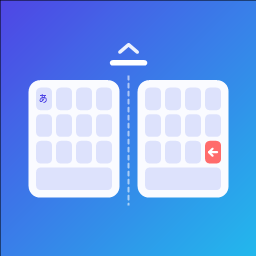

DuoKey
幅と高さを指で自由に変えられる日本語キーボード
はじめに
- 「設定」アプリ →「アプリ」→「DuoKey」→「キーボード」で「DuoKey」をオンにします。
- 文字を入力するときに、キーボードの下の 🌐 を長押しして「DuoKey」を選びます。
「フルアクセスを許可」は、純正キーボードと同じキー音と振動（触覚フィードバック）、背景の写真を使うときだけ必要です。オフのままでもすべての入力機能が使えます。
使い方
- サイズ調整：キーボード左上の「⚙︎」を長押しすると青い枠が出ます（「⚙︎」→「サイズを調整」でも可）。上の辺で高さ、左右の辺で幅、上の角で両方を変えられます。枠の中をドラッグすると左右に動きます。小さくした時は、横の余白をドラッグしても動かせます。
- プリセット：調整した大きさを 6 個まで名前を付けて登録でき、「⚙︎」の右に並ぶボタンで切り替えられます。登録・名前の変更・削除は「⚙︎」→ プリセットから。
- 余白に絵文字：キーボードを小さくして横に余白ができた時は、余白の「絵文字」ボタンで絵文字の一覧を出し入れできます。
- 着せ替え：「⚙︎」→ 着せ替えで、フォント・キーの見た目・背景を変えられます。背景の写真は DuoKey アプリの「キーボードの背景」でアルバムから選べ、「写真を削除」で消せます。
- まとめて全削除：⌫ を押したまま左へスワイプし、表示が赤くなったところで指を離すと入力欄の文字をすべて消します。直後に出る「元に戻す」で復元できます。
- 漢字変換：フリック入力（12 キー）またはローマ字で入力し、次候補で変換、確定で確定します。上の候補をタップしても確定できます。
- 分割キーボード：広い画面ではキーが左右に分かれ、両手の親指で打てます。キーボードの 「⚙︎」 から切り替えられます。
- カーソル移動：スペースキーを左右にドラッグします。
サイズと位置は画面の幅ごと（折りたたみを閉じたとき・開いたとき・横向き）に別々に記憶します。
よくある質問
キーボードの一覧に DuoKey が出てきません。
「設定」→「アプリ」→「DuoKey」→「キーボード」でオンになっているか確認してください。オンにした後、入力中の 🌐 の長押しで切り替えられます。
パスワードの入力欄で DuoKey が使えません。
iOS の仕様で、パスワードの入力欄では他社製のキーボードは使えず、標準のキーボードに切り替わります。
入力した内容が外部に送られることはありますか？
ありません。DuoKey は通信を一切行わず、変換もすべて端末の中で行います。詳しくはプライバシーポリシーをご覧ください。
変換中の文字の表示が乱れます。
一部のアプリでは、キーボードの「⚙︎」→「変換中の文字に下線を引く」をオフにすると改善します。
お問い合わせ
不具合のご報告やご要望は、メール（ohayou0912@gmail.com）でお寄せください。お使いの機種・iOS のバージョン・起きたことを書いていただけると助かります。
GitHub をお使いの方は、GitHub の Issues からでも受け付けています。